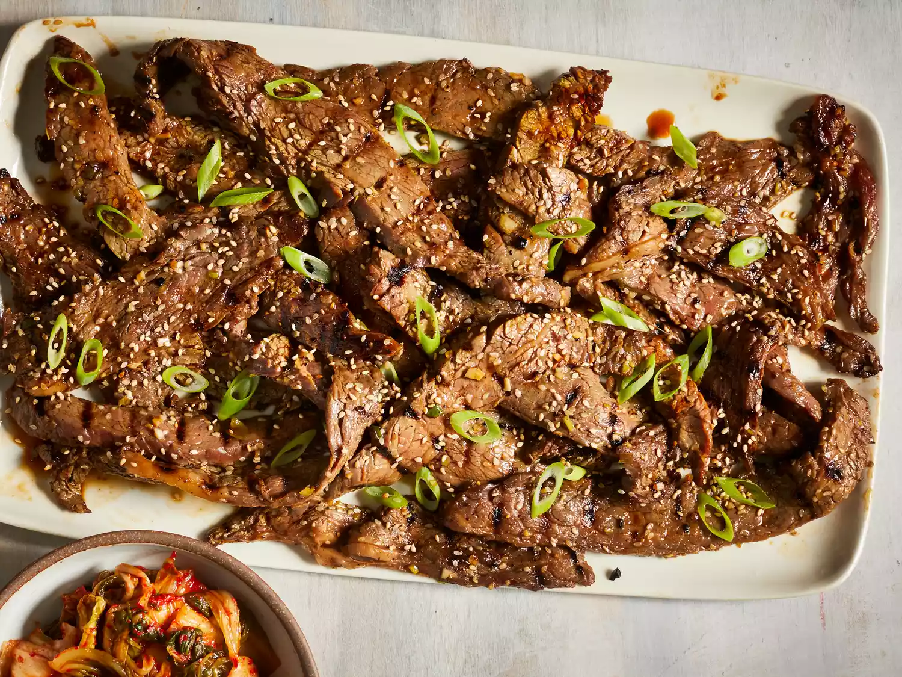
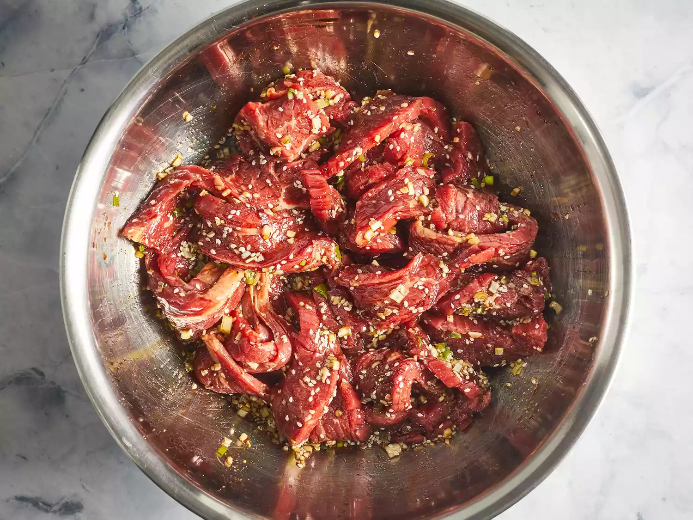

Beef Bulgogi

Description
This restaurant-worthy beef bulgogi recipe is easy to make and impossible to resist.
A sweet and savory marinade, made with ingredients you probably already have on hand,
ensures melt-in-your-mouth bulgogi every time.
Bulgogi, or Korean barbecue, literally means "fire meat." Thin slices of beef
(or sometimes pork) are marinated in a sweet-savory sauce, then grilled to juicy and
flavorful perfection.
Ingredients
- 1 pound flank steak, thinly sliced
- 5 tablespoons soy sauce
- 2.5 tablespoons white sugar
- .25 cup chopped green onion
- 2 tablespoons minced garlic
- 2 tablespoons sesame seeds
- 2 tablespoons sesame oil
- .5 teaspoon ground black pepper
Steps:
- Step 1: Gather all ingredients
- Step 2: Whisk soy sauce, green onion, sugar, garlic, sesame seeds, sesame oil, and pepper together in a bowl.
- Step 3: Place flank steak slices in a shallow dish. Pour marinade over top. Cover and refrigerate for at least 1 hour or overnight.

- Step 4: Preheat an outdoor grill for high heat, and lightly oil the grate.
- Step 5: Quickly grill flank steak slices on the preheated grill until slightly charred and cooked through, 1 to 2 minutes per side.
- Step 6: Serve hot and enjoy!